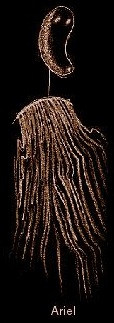

The Tempest
Characters
Characters
 An old, honest lord. The goodhearted Gonzalo helped Prospero and Miranda to
escape and survive after Antonio usurped Prospero's title.
An old, honest lord. The goodhearted Gonzalo helped Prospero and Miranda to
escape and survive after Antonio usurped Prospero's title.
Son and heir of Alonso, the King of Naples. He falls in love with Miranda
and happily submits to servitude in order to win her father's approval.
Prospero's
daughter,
whom he brought with him to the island when she was still a small child. Miranda has never seen any men other than her father and Caliban.
daughter,
whom he brought with him to the island when she was still a small child. Miranda has never seen any men other than her father and Caliban.
The play's
protagonist and Miranda's father. Usurped and exiled by his
brother Antonio, the duke of Milan.
Prospero's
thoroughly wicked brother who betrayed Prospero's trust and
stole his dukedom years before the play begins.
Alonso's brother.
Like Antonio, Sebastian is wicked and underhanded.
King of Naples
and father of Ferdinand. Alonso aided Antonio in unseating
Prospero as duke of Milan twelve years earlier.
A lord attending
King Alonso of Naples.

Prospero's spirit
helper, a powerful supernatural being whom Prospero controls
completely. Rescued by Prospero from a long imprisonment (within a tree) at the hands
of the witch Sycorax..
 Another of
Prospero's servants. Caliban, the son of the now-deceased
witch Sycorax, acquainted Prospero with the island when Prospero arrived.
Another of
Prospero's servants. Caliban, the son of the now-deceased
witch Sycorax, acquainted Prospero with the island when Prospero arrived.
A jester, who
provides comic relief along with Stefano.
A drunken butler
who provides comic relief along with Trinculo.